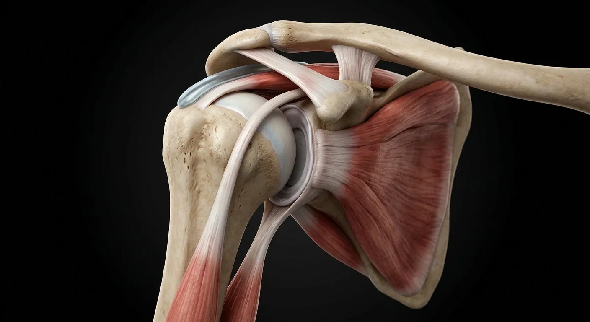

AcromionAcromioclavicular jointCoracohumeral ligamentRotator intervalHumeral headLong head of biceps tendonGlenoid fossaSubscapularis tendonAxillary recessQuadrangular spaceCoracoclavicular ligamentsCoracoacromial ligamentCoracoid processSubacromial bursaSupraspinatus tendonGlenoid labrumGlenohumeral capsule & ligamentsInfraspinatus tendonScapular stabilizersTeres minor tendon- 01Supraspinatus tendon
- 02Infraspinatus tendon
- 03Teres minor tendon
- 04Subscapularis tendon
- 05Glenoid labrum
- 06Glenohumeral capsule & ligaments
- 07Long head of biceps tendon
- 08Subacromial bursa
- 09Humeral head
- 10Glenoid fossa
- 11Coracoid process
- 12Acromion
- 13Acromioclavicular joint
- 14Coracoclavicular ligaments
- 15Coracoacromial ligament
- 16Coracohumeral ligament
- 17Rotator interval
- 18Axillary recess
- 19Quadrangular space
- 20Scapular stabilizers
How this part of the body works
Cut-away view of the cuff, labrum, capsule and biceps tendon — the structures behind most shoulder clinics.
Read the anatomy, part by part
These 20 structures describe anatomy related to the chapter’s regional illustration. Each entry separates location, function and a clinical point.
Supraspinatus tendon
Over the top of the humeral head.
What it doesInitiates abduction (first 15°).
Clinical connectionMost torn cuff tendon — painful arc 60–120°.
Infraspinatus tendon
Posterior to the head.
What it doesExternal rotation.
Clinical connectionTear → weak external rotation.
Teres minor tendon
Below infraspinatus.
What it doesExternal rotation + capsule tension.
Clinical connectionPart of cuff tears in overhead athletes.
Subscapularis tendon
Front of the head from the scapular fossa.
What it doesInternal rotation; anterior stability.
Clinical connectionLift-off test detects its tear.
Glenoid labrum
Fibrocartilage rim deepening the socket.
What it doesAdds ~50% of glenoid depth.
Clinical connectionSLAP lesions in throwers; Bankart in dislocation.
Glenohumeral capsule & ligaments
Loose sleeve with three glenohumeral ligaments.
What it doesPermits huge range; limits extremes.
Clinical connectionInferior ligament fails in anterior dislocation.
Long head of biceps tendon
From supraglenoid tubercle through the groove.
What it doesDepresses the humeral head.
Clinical connectionTendonitis: groove tenderness; rupture → Popeye.
Subacromial bursa
Sac between cuff and acromion.
What it doesReduces friction under the arch.
Clinical connectionImpingement inflames it — bursitis.
Humeral head
Rounded proximal humeral articular surface meeting glenoid cavity.
What it doesProvides large range of glenohumeral motion.
Clinical connectionDislocation can injure nearby axillary nerve.
Glenoid fossa
Shallow scapular socket deepened by its labrum.
What it doesReceives humeral head in shoulder joint.
Clinical connectionShallow socket increases mobility but needs soft-tissue stability.
Coracoid process
Anterior hook-like scapular projection for tendon and ligament attachments.
What it doesAnchors short biceps head, coracobrachialis and stabilizing ligaments.
Clinical connectionLandmark for anterior shoulder procedures.
Acromion
Lateral continuation of scapular spine forming shoulder roof.
What it doesArticulates with clavicle and overlies cuff.
Clinical connectionShape can affect subacromial clearance.
Acromioclavicular joint
Plane synovial joint between acromion and distal clavicle.
What it doesAllows scapular motion relative to clavicle.
Clinical connectionLigament injury causes AC separation.
Coracoclavicular ligaments
Conoid and trapezoid components linking coracoid to clavicle.
What it doesSuspend scapula from clavicle.
Clinical connectionRupture increases vertical AC instability.
Coracoacromial ligament
Fibrous arch spanning coracoid and acromion.
What it doesForms protective roof above humeral head.
Clinical connectionCan contribute to narrowed subacromial outlet.
Coracohumeral ligament
Fibrous reinforcement from coracoid toward greater/lesser tubercles.
What it doesHelps resist inferior translation with arm at side.
Clinical connectionCapsular contracture can limit motion.
Rotator interval
Capsular region between supraspinatus and subscapularis tendons.
What it doesContains superior glenohumeral and coracohumeral restraints.
Clinical connectionRelevant in adhesive capsulitis.
Axillary recess
Inferior capsular fold of glenohumeral joint.
What it doesUnfolds during overhead abduction.
Clinical connectionContracture limits elevation.
Quadrangular space
Passage bordered by teres muscles, long triceps head and humerus.
What it doesConveys axillary nerve and posterior circumflex humeral artery.
Clinical connectionEntrapment can affect deltoid sensation/motor supply.
Scapular stabilizers
Serratus anterior, trapezius and rhomboids coordinate scapular positioning.
What it doesPlace glenoid for efficient arm motion.
Clinical connectionWeakness may produce scapular winging or dyskinesis.
Five questions about Shoulder joint
Short answers grounded in the structures described above. Use the illustrated guide for anatomical context.
Why can the shoulder move so freely?
The shallow glenoid cavity permits a wide range of movement. The labrum, capsule, rotator cuff and surrounding muscles help stabilize the humeral head.
Which muscles form the rotator cuff?
Supraspinatus, infraspinatus, teres minor and subscapularis form the rotator cuff around the glenohumeral joint.
What is the supraspinatus tendon?
Over the top of the humeral head. Function: Initiates abduction (first 15°).
Where is the teres minor tendon located?
Below infraspinatus. Function: External rotation + capsule tension.
What is the function of the glenoid labrum?
Function: Adds ~50% of glenoid depth. Fibrocartilage rim deepening the socket.
Further reading
General anatomy references and related source chapters for continued study. These links do not make the digital illustrations clinical images or certify every anatomical variant.
This educational page is not medical advice and has not undergone formal clinical peer review. Spotted an error? Contact the editor.
Open the realistic interactive plate, label lines, focus view and self-test.